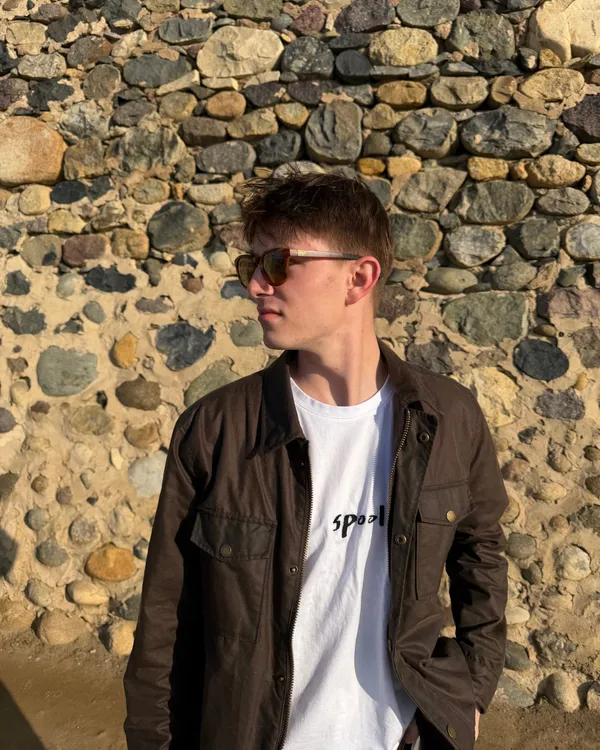
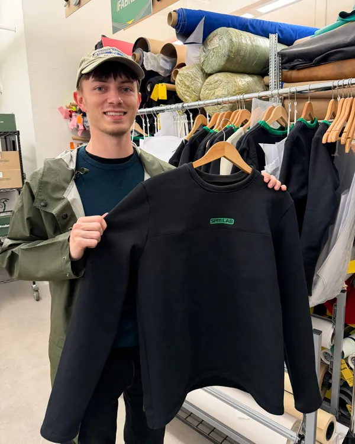
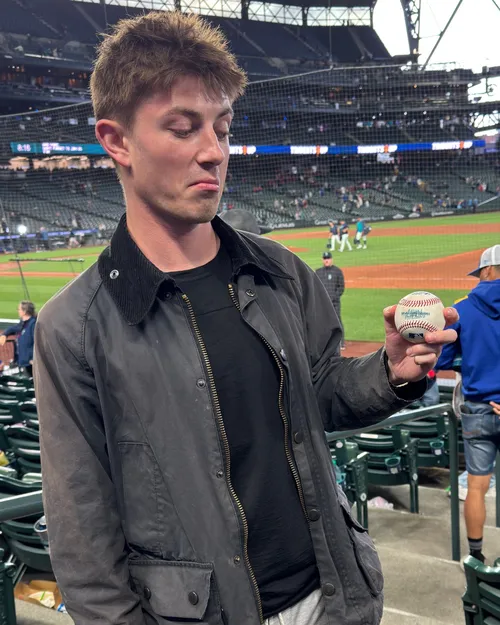

About

My story
Sports product has been part of my life for as long as I can remember. My dad worked in the industry my whole childhood, so I grew up wear testing shoes, seeing prototypes and line plans come to life, and watching how good product helps athletes perform, all while playing competitive tennis and soccer myself.
I went down a different path first. My curiosity about technology and learning how things work led me to a computer science degree with an accounting minor, and then to an IT auditing role at a public accounting firm, where I assessed whether companies’ financial systems could be trusted to produce accurate data. It taught me rigor, attention to detail, and how to work with many different teams, but I ultimately lacked the passion for it and wanted to see the results of my work. When I started looking for my next step, my dad pointed me to the University of Oregon’s Sports Product Management program, and it immediately felt like the right fit.
What I bring
- Attention to detail and documentation, from audit work and tech packs
- Comfort with numbers and costing, from my computer science and accounting background and my role as costing analyst on the Crag Bag
- Manufacturing experience, from my MAS Holdings internship and as factory contact for the Crag Bag
- A fast learner: I learned IT auditing from scratch and built a sports bra with little prior background

What I’m looking for
Apparel or footwear developer roles where I can create high-quality product that combines performance and style, and be involved from concept through production. I’m also open to sourcing and costing, materials and color, product management, and merchandising roles.
Off the clock
- Seahawks, Mariners, Padres, Ferrari (F1), and Aston Villa fan
- Former ranked junior tennis player; still playing at about a 5.0 level
- Claim to fame is that Pete Sampras held me as a baby
- Big thrifter and secondhand reseller; I’ve built a sweet collection of wool, silk, cashmere, linen, waxed cotton, and leather pieces
- US and German dual citizen with intermediate German
